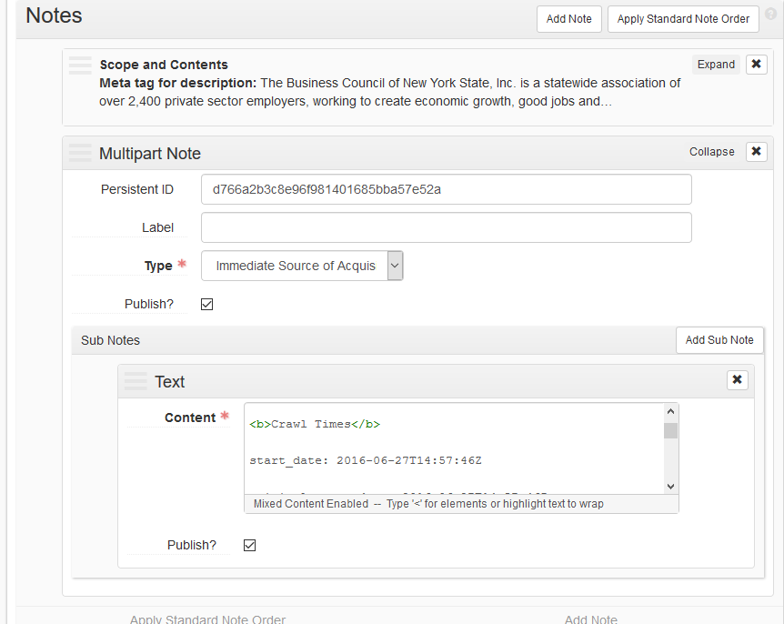

<!doctype html>
<html lang="en">
    <head>
        <meta charset="utf-8">
        <title>reveal-md</title>
        <link rel="stylesheet" href="css/reveal.css">
        <link rel="stylesheet" href="css/theme/serif.css" id="theme">
        <!-- For syntax highlighting -->
        <link rel="stylesheet" href="lib/css/zenburn.css">

        <!-- If the query includes 'print-pdf', use the PDF print sheet -->
        <script>
          document.write( '<link rel="stylesheet" href="css/print/' + ( window.location.search.match( /print-pdf/gi ) ? 'pdf' : 'paper' ) + '.css" type="text/css" media="print">' );
        </script>
    </head>
    <body>

        <div class="reveal">
            <div class="slides"><section  data-markdown><script type="text/template"><style>
#fLeft {float: left; max-width: 50%;}
#fRight {float: right; max-width: 50%;}
#smallLink {font-size: 18px;}
</style>

### Describing Web Archives with the Partner Data API
<br/>
##### Gregory Wiedeman
##### University Archivist
##### University at Albany, SUNY
#####  @GregWiedeman

</script></section><section  data-markdown><script type="text/template">
### Web Archiving at UAlbany

1. Document permanent university records online
2. Continue outside collecting in native format
</script></section><section  data-markdown><script type="text/template">
### Web Archiving at UAlbany

* 1 University Archives line (me)
    * 1 part time grad student most semesters
* We have stuff to do
    * ~18,000 student, 1,200 staff university
    * Public records collecting program
    * ~250 collections, ~1/3 folder-level description
    * Oh yeah, and web archives <!-- .element: class="fragment" data-fragment-index="1" -->
</script></section><section  data-markdown><script type="text/template">
### Web Archives are Archives

* Tremendous volume of interlinked information
* Context of creation and use is important
	
</script></section><section  data-markdown><script type="text/template">
### We do not describe web archives as archives

* Archive-It discovery is a format-based silo
* Dublin Core/Catalog-like description is inefficent and duplicative
* Even detailed and laborous description only documents a small portion
* Privileges description of content rather than context
    
</script></section><section  data-markdown><script type="text/template">
### If I had to enter detailed metadata for each Archive-It collection (or each seed!),

### I would collect less. <!-- .element: class="fragment" data-fragment-index="1" -->
</script></section><section  data-markdown><script type="text/template">
### Describing Web Archives with DACS

* Use context to efficiently manage records at scale
* "Power of Provenance"
    * Discovery by context of creation/use, rather than format silos
* Aggregate descripion
    * Minimum  level of description
    * User-driven enhancement of existing discription
</script></section><section  data-markdown><script type="text/template">
### DACS Statement of Principles 

[https://bit.ly/2MkZgCt](https://github.com/saa-ts-dacs/dacs/blob/1fcf9c4ad2888384d2664bf998e1474b44d84697/statement_of_principles.md)

> "3. Because archival description privileges intellectual content in context, descriptive rules apply equally to all records, regardless of format or carrier type."
</script></section><section  data-markdown><script type="text/template">
### DACS Statement of Principles 

[https://bit.ly/2MkZgCt](https://github.com/saa-ts-dacs/dacs/blob/1fcf9c4ad2888384d2664bf998e1474b44d84697/statement_of_principles.md)

> "4a. Records must be described in aggregate and may be described in parts."
</script></section><section  data-markdown><script type="text/template">
### DACS Statement of Principles 

[https://bit.ly/2MkZgCt](https://github.com/saa-ts-dacs/dacs/blob/1fcf9c4ad2888384d2664bf998e1474b44d84697/statement_of_principles.md)

> "10. Archivists must have a user-driven reason to enhance existing archival description."
</script></section><section  data-markdown><script type="text/template">
### I tried this, it's difficult


</script></section><section  data-markdown><script type="text/template">
## We Have More Tools

* ArchivesSpace
    * Interoperable storage for archival descripion
    * API and [ArchivesSnake](https://github.com/archivesspace-labs/ArchivesSnake)
* CDX
    * All the content description is here
* Partner Data API
    * All the technical context is here
    * DC descriptive metadata
* Content Storage
    * Interoperable storage for technical metadata
    
</script></section><section  data-markdown><script type="text/template">
## ArchivesSpace

* Interoperable storage for archival descripion
* API and [ArchivesSnake](https://github.com/archivesspace-labs/ArchivesSnake)

```
from asnake.aspace import ASpace

AS = ASpace()
repo = AS.repositories(2)

collection = repo.resources(253)
for child in collection.tree.children:
    if child.level == "Web Archives":
        series = child.record
        newArchivalObject = AS.archival_object.new()
        # add description here
        
        newArchivalObject.parent = series
        newArchivalObject.resource = collection
        newArchivalObject.post()
```
</script></section><section  data-markdown><script type="text/template">
## Archive-It CDX

* [List of captures by URL and collection number](https://support.archive-it.org/hc/en-us/articles/115001790023-Access-Archive-It-s-Wayback-index-with-the-CDX-C-API)
* <a id="smallLink" href="http://wayback.archive-it.org/3308/timemap/cdx?url=https://www.albany.edu/president/about-the-president.php">http://wayback.archive-it.org/3308/timemap/cdx?url=https://www.albany.edu/president/about-the-president.php</a>

```
edu,albany)/president/about-the-president.php 20171218033537 http://www.albany.edu/president/about-the-president.php text/html 200 VQR3D3JAD6BIB36O4ELJH7L6U2IESQOT - - 6977 871017071 ARCHIVEIT-3308-MONTHLY-JOB512297-20171217200124134-00000.warc.gz
edu,albany)/president/about-the-president.php 20180117191831 https://www.albany.edu/president/about-the-president.php text/html 200 7BXF5EVUN52ZYR7THHFXKQXF7I3LBHNC - - 7157 309246547 ARCHIVEIT-3308-MONTHLY-JOB541502-20180117165511664-00000.warc.gz
edu,albany)/president/about-the-president.php 20180217194454 https://www.albany.edu/president/about-the-president.php text/html 200 XD6ET6ZBLTNN6OLSCVSMIXU44TWN5W4M - - 8019 411195409 ARCHIVEIT-3308-MONTHLY-JOB550452-20180217165509323-00000.warc.gz
edu,albany)/president/about-the-president.php 20180317200843 https://www.albany.edu/president/about-the-president.php text/html 200 KY54GB6LH24DRIZGBIO4R3VXXA2UHTN3 - - 8074 392459899 ARCHIVEIT-3308-MONTHLY-JOB557606-20180317165527317-00000.warc.gz
edu,albany)/president/about-the-president.php 20180417185510 https://www.albany.edu/president/about-the-president.php text/html 200 O6SIJTKE2X565QJ5ZEWPZYSK3H53HZDH - - 8085 227334518 ARCHIVEIT-3308-MONTHLY-JOB566289-20180417155443995-00000.warc.gz
edu,albany)/president/about-the-president.php 20180517190232 https://www.albany.edu/president/about-the-president.php warc/revisit - O6SIJTKE2X565QJ5ZEWPZYSK3H53HZDH - - 648 223149579 ARCHIVEIT-3308-MONTHLY-JOB576427-20180517155506038-00000.warc.gz
edu,albany)/president/about-the-president.php 20180617184722 https://www.albany.edu/president/about-the-president.php text/html 200 F2CRCBL5TZRROHBN5GCF7IESJR44ABIQ - - 8081 59342345 ARCHIVEIT-3308-MONTHLY-JOB599287-20180617155438242-00000.warc.gz
edu,albany)/president/about-the-president.php 20180717204617 https://www.albany.edu/president/about-the-president.php text/html 200 W6VTFG3HQYDTRLUEGMVA2M5BU75QT47N - - 7968 130376348 ARCHIVEIT-3308-MONTHLY-JOB647847-20180717155427452-00000.warc.gz


```
</script></section><section  data-markdown><script type="text/template">
## Partner Data API

* Its the stuff in the Archive-It web app
    * [Collections](https://partner.archive-it.org/api/collection?id=7082)
    * [Seeds!](https://partner.archive-it.org/api/seed/1020827)
    * [Seeds in a collection!](https://partner.archive-it.org/api/seed?collection=6372)
    * [Crawls!](https://partner.archive-it.org/api/crawl_job/303101)
    * [Rules!](https://partner.archive-it.org/api/scope_rule?collection=6372)
    * [Metadata!](https://partner.archive-it.org/api/seed?collection=3721)
</script></section><section  data-markdown><script type="text/template">
## Content Storage

<div id="fLeft">

</div>
<div id="fRight">
<ul>
<li>Need a place to put stuff</li>
<li>Hyrax Repository with Web Archives Model</li>
<li>API ingest</li>
<li>[PCDM Web Archives Working Group](https://github.com/pcdm/webarchiving_wg/wiki/February-20,-2018)</li>
<li>[A Model!](https://docs.google.com/drawings/d/1YiY-tQ4HnNVf-fU-cX50OdWX1xwdImji4Cl63LBS9gM/edit)</li>
</ul>
</div>

    
</script></section><section  data-markdown><script type="text/template">
## Describing Web Archives

1. Scope and schedule crawls in Archive-It
2. Describe in ASpace with other records
3. [Get dates and extents from CDX, post new AOs](http://wayback.archive-it.org/6372/timemap/cdx?url=http://www.albanystudentpress.net)
4. Download WARCS with WASAPI
5. [Get crawl and scoping rules](https://partner.archive-it.org/api/crawl_job/303101)
6. Make all this discoverable
</script></section><section  data-markdown><script type="text/template">
## Two Processes

1. Automated updates of ASpace records from CDX
    * Standard method of defining Web Archives actionably
    * ASpace Plugin or exterior API process
        
2. New content records for each capture
    * Standard Data Model
    * System Agnostic process for this
    
</script></section><section  data-markdown><script type="text/template">
## I need help!

* More use cases!
* Defining standard practices
* Describing Web Archives Working Group?

* Slides: [http://gregwiedeman.com/ait2018.html](http://www.gregwiedeman.com/ait2018.html)
* Code: [https://github.com/UAlbanyArchives/describingWebArchives](https://github.com/UAlbanyArchives/describingWebArchives)

</script></section></div>
        </div>

        <script src="lib/js/head.min.js"></script>
        <script src="js/reveal.js"></script>

        <script>
            function extend() {
              var target = {};
              for (var i = 0; i < arguments.length; i++) {
                var source = arguments[i];
                for (var key in source) {
                  if (source.hasOwnProperty(key)) {
                    target[key] = source[key];
                  }
                }
              }
              return target;
            }

            // Optional libraries used to extend on reveal.js
            var deps = [
              { src: 'lib/js/classList.js', condition: function() { return !document.body.classList; } },
              { src: 'plugin/markdown/marked.js', condition: function() { return !!document.querySelector('[data-markdown]'); } },
              { src: 'plugin/markdown/markdown.js', condition: function() { return !!document.querySelector('[data-markdown]'); } },
              { src: 'plugin/highlight/highlight.js', async: true, callback: function() { hljs.initHighlightingOnLoad(); } },
              { src: 'plugin/notes/notes.js', async: true, condition: function() { return !!document.body.classList; } },
              { src: 'plugin/math/math.js', async: true }
            ];

            // default options to init reveal.js
            var defaultOptions = {
              controls: true,
              progress: true,
              history: true,
              center: true,
              transition: 'default',
              dependencies: deps
            };

            // options from URL query string
            var queryOptions = Reveal.getQueryHash() || {};

            var options = {
  "transition": "fade"
};
            options = extend(defaultOptions, options, queryOptions);
            Reveal.initialize(options);
        </script>
        
          <script src="/scripts/slides"></script>
    </body>
</html>
